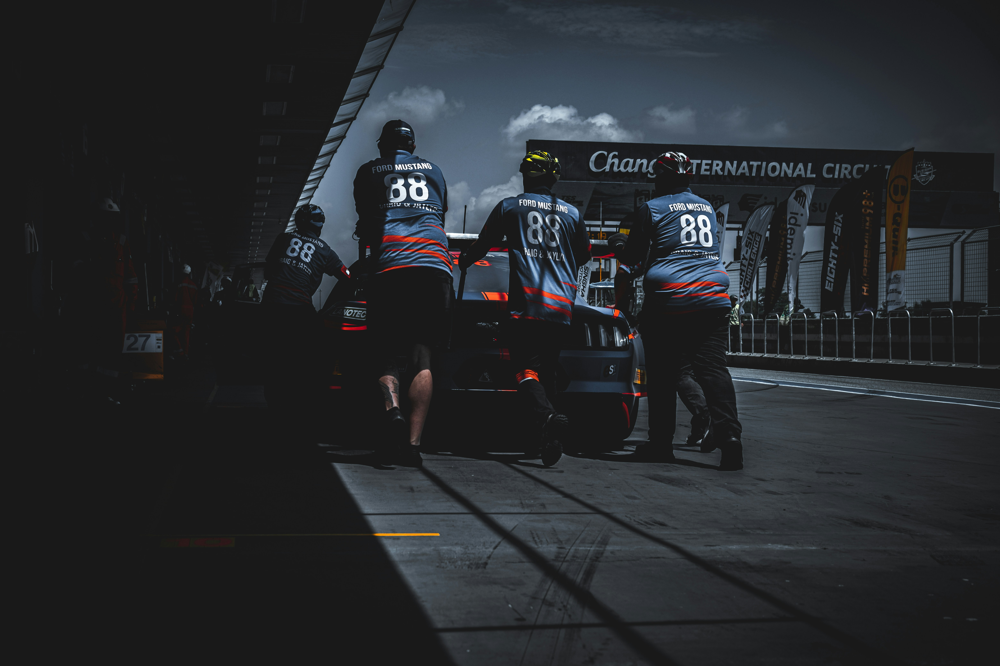

Технологічні гіганти та приватні майстерні, що об'єднують інженерію та пристрасть заради перемоги.
Кожна команда має власну філософію, культуру та шлях до вершини автоспорту.
Найстаріша та найтитулованіша команда у Формулі 1, символ пристрасті італійського автоспорту.
Легендарна британська команда з довгою історією технологічних інновацій та тріумфів.
Заводська команда Mercedes, що домінувала в еру гібридних турбо-двигунів Формули 1.
Команда, що поєднала енергійний бренд та найкращих інженерів для серії чемпіонських титулів.
Найуспішніший виробник в історії «24 годин Ле-Мана» та символ інженерної досконалості.
Домінуюча команда сучасної ери WEC та багаторазовий переможець Дакара і WRC.
Піонер технології quattro та однин із найуспішніших виробників у перегонах на витривалість.
Гоночний підрозділ Honda, що визначив розвиток мотоспорту протягом десятиліть.
Один з найтитулованіших виробників мотоциклів у гоночній історії світу.
Динамічна команда, що вивела корейський автоспорт на вершину світового ралі.
Заводська команда Jaguar у Formula E, одна з найуспішніших з появи серії.
Альянс DS Automobiles та Team Penske у Formula E, багаторазовий призер чемпіонату.
Американський виробник, що повернувся в перегони на витривалість з прототипом V-Series.R.
Приватна британська команда, що представляє Ford у World Rally Championship десятиліттями.
Команда, що домінувала в WRC в еру Себастьєна Льоба на початку 2000-х.
Новий заводський проєкт Dacia на Дакарі, що одразу здобув перемогу з Насером Аль-Аттією.
Австрійський виробник, що успішно виступає і в ралі-рейдах, і в MotoGP.
Приватна команда, що зробила MINI John Cooper Works одним з найуспішніших авто в історії Дакара.
Одна з найуспішніших команд в історії IndyCar, дім чотирьох титулів Алекса Палоу.
Легендарна американська команда Роджера Пенске, що перемагає одночасно в IndyCar та NASCAR.
Команда родини Андретті — одна з найвідоміших назв в американському автоспорті.
Американський підрозділ McLaren Racing, що бореться за перемоги в IndyCar.
Найуспішніша організація в історії NASCAR Cup Series за кількістю чемпіонських титулів.
Команда легендарного тренера НФЛ Джо Гіббса, одна з провідних сил NASCAR Cup Series.
Команда, заснована Денні Гемліном і Майклом Джорданом, що швидко увійшла в еліту NASCAR.
Італійська марка, що перетворилася на домінуючу силу сучасного MotoGP.
Знаменита порше-команда з Нюрбургринга, що здобула потрійний тріумф у DTM 2025.
Провідна приватна команда BMW в німецьких перегонах туристичних автомобілів.
Команда Mercedes-AMG, що представляє марку в сучасному чемпіонаті DTM.
Австрійська команда, що здобула першу в історії перемогу Lamborghini на «24 годинах Спа».
Бельгійська команда, одна з найуспішніших у сучасному GT3-автоспорті.
Італійська команда, офіційний партнер Ferrari у перегонах на витривалість та GT3.
Під час підготовки цієї сторінки використано перевірені офіційні та довідкові джерела.